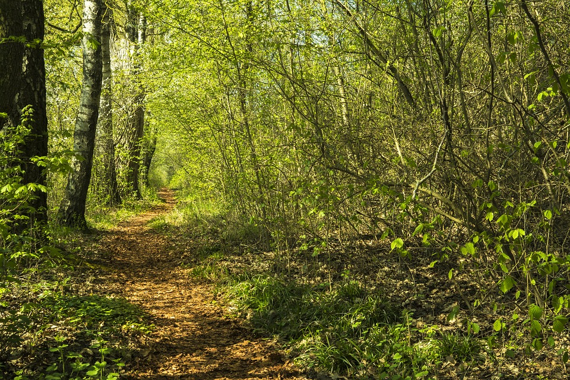

Protecting nature, for people today and future generations.
The mission of The Nature Conservancy is to conserve the lands and waters on which all life depends. Our vision is a world where the diversity of life thrives, and people act to conserve nature for its own sake and its ability to fulfill our needs and enrich our lives. How do we achieve this mission and vision? Through the dedicated efforts of our diverse staff, including more than 600 scientists, all of whom impact conservation in 69 countries. With the help of our many partners, from individuals and governments to local nonprofits and corporations. By using a non-confrontational, collaborative approach and staying true to our five unique core values. That's how The Nature Conservancy has done more than anyone else to advance conservation around the world since our founding in 1951.
Leadership

What drives our success? A commitment to respect, integrity, diversity and lasting results.
The Nature Conservancy is governed as a single, tax-exempt 501(c)(3) organization by a worldwide, volunteer Board of Directors and is managed from its worldwide office in Arlington, Virginia USA. Because the Conservancy is organized as a single organization rather than as separate local legal entities, ultimate responsibility for the operation of The Nature Conservancy lies with its Board of Directors. Although the Board of Directors cannot delegate its broad legal and fiduciary responsibilities, it does delegate responsibility for day-to-day operations to the president and chief executive officer, who in turn delegates responsibilities to his or her executive team.
Our History (Click to expand/hide)
Founded in 1951, the Conservancy is the world's leading conservation organization.
1915
The Ecological Society of America is formed. From its beginning, there is some disagreement about its mission: Should it exist only to support ecologists and publish research or should it also pursue an agenda to preserve natural areas?
1917
From the activist wing within the Ecological Society, the Committee for the Preservation of Natural Conditions, chaired by Victor Shelford, is created.
1926
The Committee publishes The Naturalist's Guide to the Americas, an attempt to catalog all the known patches of wilderness left in North and Central America.
1946
A small group of scientists form the Ecologists Union, resolving to take "direct action" to save threatened natural areas.
1950
The Ecologists Union changes its name to The Nature Conservancy.
1951
The Nature Conservancy is incorporated as a nonprofit organization in the District of Columbia on October 22.
1954
The Nature Conservancy grants its first official chapter charter in Eastern New York, launching a network of chapters and field offices that grows to cover the entire United States.
1955
Land acquisition, a key protection tool for the Conservancy, begins with a 60-acre purchase along the Mianus River Gorge on the New York/Connecticut border. The Conservancy provides $7,500 to finance the purchase, with the provision that the loan be repaid for use in other conservation efforts. The revolving loan fund that results - the Land Preservation Fund - is still the organization's foremost conservation tool.
1961
The Nature Conservancy embarks on its first partnership with a public agency, the Bureau of Land Management, to help co-manage an important old-growth forest in California. The Nature Conservancy receives its first donated conservation easement, on 6 acres of Bantam River salt marsh in Connecticut. The easement allows the landowner to retain title to the ecologically valuable property while giving the Conservancy the right to enforce restrictions on certain types of harmful activities.
1962
The Nature Conservancy conducts the first prescribed burn at the Helen Allison Savanna Preserve north of Minneapolis.
1965
A gift from the Ford Foundation enables the Nature Conservancy to hire its first full-time, paid president.
1966
The Nature Conservancy purchases Mason Neck, Virginia, as part of a plan to later sell it to the federal government. It is the first such deal of this magnitude with the government - an arrangement that comes to be known as a government co-op.
1970
Robert E. Jenkins joins the Conservancy as vice president for science and leads the organization to create a biological inventory of the United States, introducing heightened scientific rigor to land acquisition choices. The inventory provides the impetus to create the state Natural Heritage Network.
1974
The Natural Heritage Network covers all 50 states. Its sophisticated databases provide the most complete information about the existence and location of species and natural communities in the United States. The methodology becomes the national standard and is adopted by numerous partner organizations and federal and state governments and universities.
1980
The Nature Conservancy launches its International Conservation Program to identify natural areas and conservation organizations in Latin America in need of technical and financial assistance.
1988
With the purchase of $240,000 in Costa Rican debt, The Nature Conservancy completes its first "debt-for-nature" swap to support conservation in Braulio Carillo National Park. The Conservancy signs a landmark agreement with the U.S. Department of Defense to assist in managing 25 million acres of military land.
1989
With funding from the U.S. Congress, The Nature Conservancy launches the Parks in Peril program, designed to protect 50 million acres in Central and South America and the Caribbean by helping local nonprofit and governmental organizations provide effective park stewardship. The Nature Conservancy purchases the 32,000-acre Barnard Ranch in Oklahoma's Osage Hills and establishes the Tallgrass Prairie Preserve. Here, the Conservancy has undertaken its largest restoration effort to date, re-creating a fully functioning tallgrass prairie by reintroducing bison and fire to the ecosystem.
1990
A new office in Koror, Republic of Palau, represents The Nature Conservancy's first expansion beyond the Western Hemisphere.
1991
The Nature Conservancy launches its Last Great Places: An Alliance for People and the Environment initiative, a multinational, $300 million effort to protect large-scale ecosystems by making people part of the solution. The initiative emphasizes core reserve areas surrounded by buffer zones, where appropriate human uses are encouraged.
1994
The Nature Conservancy opens its first South American office, in Brazil's capital, Brasilia.
1995
The Nature Conservancy adopts Conservation by Design, a cutting-edge ecoregional approach for setting conservation priorities and taking action. Drawing on the lessons learned through the Last Great Places initiative and guided by scientific data from the Natural Heritage Network, the Conservancy begins to employ this framework for identifying the suite of sites that must be protected to conserve the biological diversity of the Western Hemisphere.
1999
The Nature Conservancy's Membership surpasses 1 million.
2000
The Conservancy announces The Campaign for Conservation, an effort to raise $1 billion to preserve 200 Last Great Places and complete a Conservation Blueprint identifying the places that must be conserved to ensure lasting protection of our natural heritage. The Campaign concluded at the end of 2003 after raising a total $1.4 billion. The Conservancy spins off its 85-center Natural Heritage Network into a new independent organization, the Association for Biodiversity Information (later named NatureServe). The Conservancy and the Association for Biodiversity Information publish Precious Heritage: The Status of Biodiversity in the United States, the most comprehensive analysis to date of biodiversity in the United States. Precious Heritage warns that 1/3 of the plant and animal species found in the United States are in peril.
2001
Steve McCormick begins as President and Chief Executive Officer of The Nature Conservancy in February. The Nature Conservancy turns 50. In celebration, 12 renowned photographers, including Annie Leibovitz and William Wegman, capture the rich and complex splendor of some of the "Last Great Places" in the Conservancy's In Response to Place photography exhibit.
2002
The Fire Learning Network is launched as a joint project of The Nature Conservancy, the USDA Forest Service and several agencies of the U.S. Department of the Interior.
2003
Transforming a bankruptcy into a conservation opportunity, The Nature Conservancy, Conservation International and World Wildlife Fund, partnered with Chilean environmental organizations to protect the rare plants and wildlife on 147,500 acres of biologically rich temperate rainforest in the Valdivian Coastal Range in southern Chile. The Nature Conservancy and The National Park Service jointly purchased the 116,000-acre Kahuku Ranch in Hawaii for addition to Hawaii Volcanoes National Park. The purchase increases the size of the 217,000-acre park by fifty percent, and is the largest land conservation transaction in Hawaii's history.
2004
After more than a decade of work to conserve the 151-square mile Baca Ranch in Colorado, The Nature Conservancy completes the last of a complex set of real estate transactions, clearing the way for the protection of the ranch and the designation of the nation's newest national park, the Great Sand Dunes National Park. During a five-week expedition through Indonesia's karst systems - limestone caves, cliffs and sinkholes - a team of international scientists led by The Nature Conservancy discover several new species, including a "monster" cockroach that is believed to be the largest known species of cockroach in the world.
2006
Through the Micronesia Challenge, five Micronesian governments commit to conserve 30 percent of nearshore marine resources and 20 percent of forest resources by 2020. The Nature Conservancy launches its Africa program.
2007
The Conservancy protects 161,000 acres of forest in New York's Adirondacks, the last big tract of privately owned timberland in the park. The transaction allows selective logging to continue for 20 years, helping to preserve 850 jobs at a local mill. The Conservancy and Conservation International broker the largest ever debt-for-nature swap under the Tropical Forest Conservation Act. The forgiven debt provides $26 million in conservation funding for Costa Rican tropical forests identified as conservation gaps by the Conservancy.
2008
Mark Tercek, former head of the Goldman Sachs Center for Environmental Markets, begins as President and Chief Executive Officer of The Nature Conservancy in July. The Nature Conservancy and The Trust for Public Land preserve the Crown of the Continent - 312,000 acres of western Montana forestland. This region has sustained all of its species - including grizzlies, lynx, moose and bull trout - since Lewis and Clark.
2009
The Nature Conservancy was a catalyst for bringing together leaders from six nations to launch the Coral Triangle Initiative. The coalition seeks to ensure the sustainability of marine and coastal resources that provide livelihoods and food security for more than 120 million people in the region. The Nature Conservancy was instrumental in the campaign to pass the Clean Water, Land and Legacy amendment to the Minnesota Constitution, the largest public funding initiative for the environment in U.S. history amounting to an estimated $300 million per year in dedicated funding for the next 25 years.
2010
Through the work of The Nature Conservancy and its partners, bison were reintroduced to the Conservancy's El Uno Ecological Reserve in Chihuahua, Mexico, helping the Conservancy to restore Mexico's once-vast prairie ecosystem. These bison will serve as a "seed herd" for grassland recovery projects across the country. The Conservancy's China Blueprint-a massive survey of conservation priorities-played a big role in forming China's national conservation plan. The plan will guide conservation in China for years to come, and calls for a halt to the loss of all biodiversity in the country by 2020 in addition to setting a number of priority conservation areas.
2011
In January 2011, just eight months after the Deepwater Horizon oil spill disaster, more than 500 volunteers joined us in Mobile Bay, Ala., to launch the 100-1000 Coastal Alabama effort by restoring an oyster reef. By July, Conservancy scientists were already seeing sediment accumulation, coastal marsh and seagrass recovery and an increase in birds and fish using the area.
2012
The Nature Conservancy, the Dow Chemical Company and The Dow Chemical Company Foundation launched a breakthrough collaboration to demonstrate that valuing nature can be a corporate priority that supports a company's global business strategy. Over the course of five years, the organizations are working together to develop tools and demonstrate models for valuing nature in business decisions. The Conservancy donated 24,000 acres of native forest of its Valdivian Coastal Reserve in southern Chile for the creation of the Alerce Coastal National Park, which protects 61,000 acres of some of the world's last temperate rainforests, including alerce trees thousands of years old.
2013
The Conservancy launched China's first land trust reserve, serving as a prototype for a new land protection model in the country. Located in a former Sichuan province logging concession, Laohegou is home to some of the most abundant wildlife in China, including giant pandas, golden monkeys, takins and Asian golden cats. With the Conservancy's support the Raja Ampat government in Indonesia declared its nearly 11.4 million acres of marine waters a shark sanctuary.
2014
More than a decade in the making, the Conservancy and partners restored Maine's Penobscot River by removing two dams and building a state-of-the-art fish bypass around a third, all while making hydropower elsewhere on the river more efficient, maintaining the river's benefits for both people and nature. Using an innovative water-banking model and a trust to acquire water rights, The Nature Conservancy joined with binational partners to ensure that the Colorado River delta received dedicated water flows for the first time in nearly half a century.
2015
The Nature Conservancy helped conserve the ecological integrity of 257 square miles of forests, rivers and wildlife habitat in the eastern Cascade Mountains of Washington and in the Blackfoot River valley in Montana. Through Impact Investing, the Conservancy and other investors used interim financing to acquire the lands, stitching together these important migratory corridors that link up through Canada.